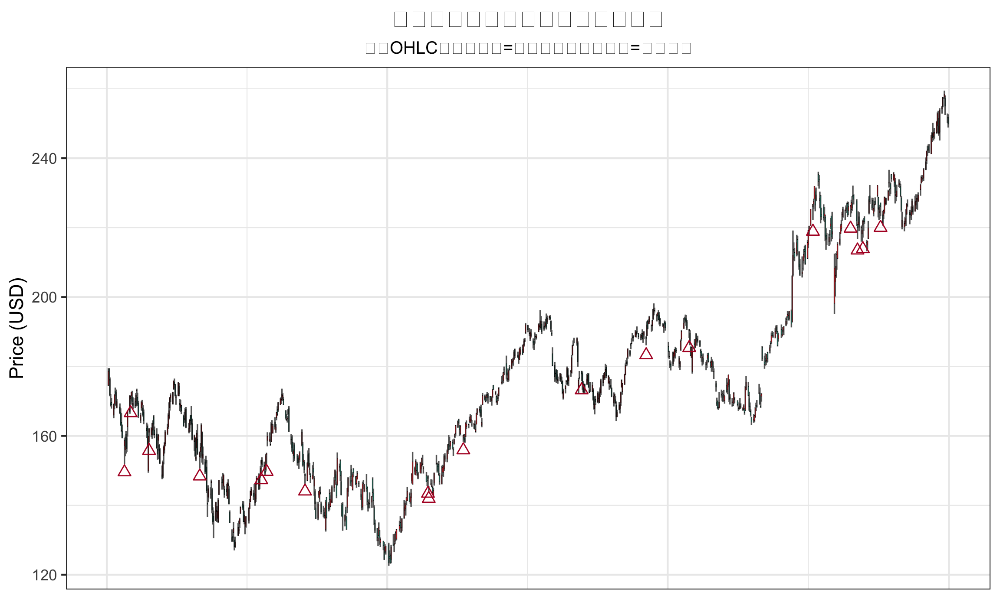
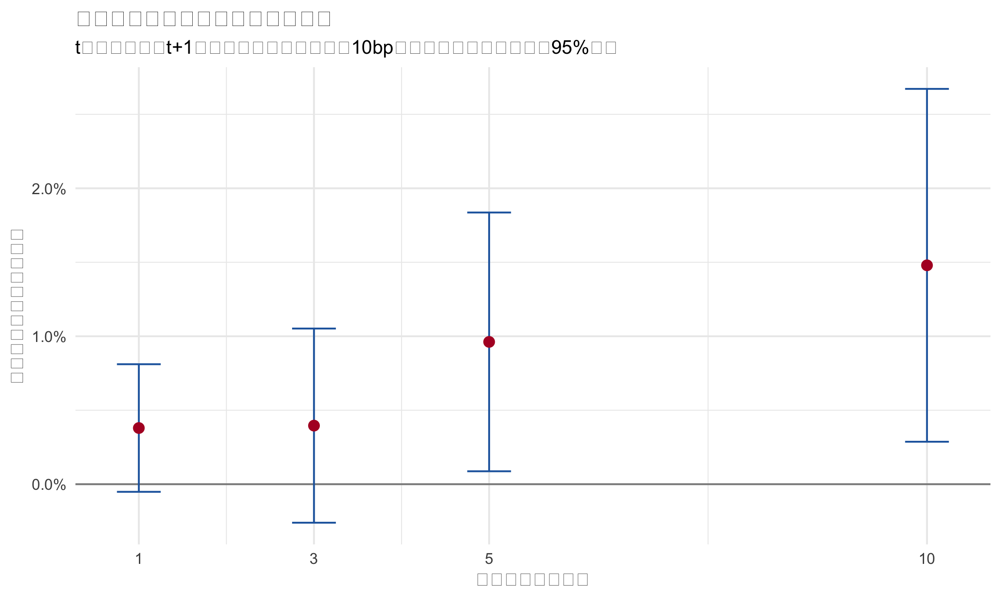

单根K线：压力、拒绝与失衡
问题现场
同一根长下影K线，在急跌末端会被称为锤子，在上涨后可能被称为上吊线；几何相同，名称却因位置而变。若检测器只看影线，研究者却把输出直接解释为反转，定义和语义就发生了错位。本章先把单根K线拆成连续特征，再讨论经典名称如何依赖上下文。
学习目标
- 参数化实体、上下影、振幅与收盘位置；
- 区分形态几何与趋势语义；
- 区分锤子、上吊、流星、倒锤与十字；
- 比较全部事件与非重叠事件；
- 解释阈值、复权和交易成本如何改变结论。
经典形态与市场机制
锤子线与上吊线具有相似几何：小实体位于日内区间上方，长下影表示价格一度下探后收回。处于下跌之后时，经典名称为锤子；处于上涨之后时，称为上吊。倒锤与流星共享长上影几何，方向语义同样来自前置环境。十字、纺锤和长实体更适合作为状态或强度特征，而不应天然映射为看涨或看跌 [@nison2001]。
章内方向索引
| 几何结构 | 看涨候选（需有前置环境） | 看跌候选（需有前置环境） | 中性/状态特征 |
|---|---|---|---|
| 长下影、小实体 | 下跌后的锤子 | 上涨后的上吊 | 无趋势时仅表示低位拒绝 |
| 长上影、小实体 | 下跌后的倒锤 | 上涨后的流星 | 无趋势时仅表示高位拒绝 |
| 极小实体 | — | — | 十字、长腿十字、蜻蜓与墓碑子类 |
| 小实体、双侧影线 | — | — | 纺锤与波动收缩 |
可能机制是原有方向的推动者未能守住极端位置，另一方在收盘前取得优势。但几何并不告诉我们这个优势能持续多久。跳空、财报、指数共振和流动性都可能主导后续收益。
可计算定义
令振幅为 \(R_t=H_t-L_t\)，实体、上影与下影占比分别为：
\[ b_t=\frac{|C_t-O_t|}{R_t},\qquad u_t=\frac{H_t-\max(O_t,C_t)}{R_t},\qquad d_t=\frac{\min(O_t,C_t)-L_t}{R_t}. \]
教学用锤子候选可定义为 \(d_t\ge0.50\)、\(b_t\le0.35\)、\(u_t\le0.15\)；流星交换上下影条件。连续比例优于单一硬标签，因为它保留了临界样本的信息。方向需要另加前置趋势；本章主实验先比较包的锤子、流星与倒锤几何，趋势过滤留到第趋势、支撑阻力与极性转换章。
研究设计
主实验把锤子和倒锤记为+1、流星记为-1，目的在于检验“单根几何本身是否有信息”。信号于收盘后形成，次日开盘成交，持有5日，成本10bp。稳健性检查连续比例定义、包默认定义、20/60日趋势背景和非重叠事件。几何方向只是研究编码，不是形态固有结论。
R实现
ohlc <- lab_xts()
hammer_r <- eCandleSticks::add_csp_hammer(ohlc)
shooting_r <- eCandleSticks::add_csp_shooting_star(ohlc)
inverted_r <- eCandleSticks::add_csp_inverted_hammer(ohlc)
single_signal <- sign(
as.integer(hammer_r[, "Hammer"]) -
as.integer(shooting_r[, "ShootingStar"]) +
as.integer(inverted_r[, "InvertedHammer"])
)包函数直接接受含日期和小写OHLC列的数据框，也可接受 xts。本书使用 xts 保持与 eFinCharts 对齐，并在事件研究前把输出压缩为整数方向。
Python实现
from ecandlesticks import add_hammer, add_inverted_hammer, add_shooting_star
from python.candlestick_lab import load_data, to_ohlcv
ohlcv = to_ohlcv(load_data())
hammer = add_hammer(ohlcv)["Hammer"].astype(int)
shooting = add_shooting_star(ohlcv)["ShootingStar"].astype(int)
inverted = add_inverted_hammer(ohlcv)["InvertedHammer"].astype(int)
single_signal = (hammer - shooting + inverted).clip(-1, 1)R与Python检测器可能使用不同阈值，因此事件数不必完全相同。研究报告应保存包版本、函数参数和差异日期。
图形诊断

图上应重点寻找“形态正确但位置错误”的反例：上涨途中出现看涨吞没、横盘中的锤子、巨大隔夜跳空后的吞没。它们提醒我们，形态分类和交易语义不是同一个变量。
证据与稳健性
| sample | events | mean_gross | mean_net | win_rate | ci_low | ci_high |
|---|---|---|---|---|---|---|
| 全部事件 | 74 | 0.0106 | 0.0096 | 0.6622 | 9e-04 | 0.0184 |
| 非重叠事件 | 70 | 0.0096 | 0.0086 | 0.6429 | -6e-04 | 0.0177 |

图形只能检查命中环境，不能证明总体有效。应同时读取样本数、均值、中位数、胜率与区间，并检查定义边界是否主导结果。若加入趋势背景后效果改善，仍需在留出样本验证，不能把同一数据上的改善称为稳健结论。
AI协作实验室
AI任务是从函数源码提取锤子、流星和倒锤的精确不等式，并自动生成恰好位于阈值、略高和略低的边界K线。约束是不得根据收益结果修改阈值。验收用手工构造OHLC、零振幅样本和实际数据事件数完成。
失效条件与常见误区
- 只看形状，不定义此前趋势；
- 把同一几何在任何位置都称为反转；
- 忽略零振幅、复权和最小报价单位；
- 用信号日收盘成交；
- 在看到回测结果后添加“确认条件”。
本章小结与练习
单根K线提供几何描述，不提供因果结论。影线、实体和位置必须参数化，方向必须由上下文和执行规则赋予。
- 分别统计锤子、流星和倒锤的5日净收益。
- 给锤子加入“过去20日收益为负”的条件，比较样本量和区间。
- 构造位于影线阈值两侧的边界样本，并检查两种实现。
进入下一章前，请确认你能用比例而不是名称描述任意单根K线，并说明为什么上吊线不能只靠单根几何命名。